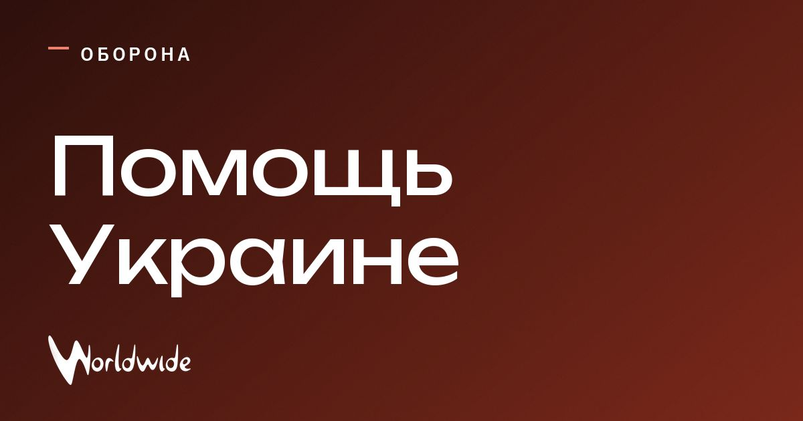

Германия направит Украине 1,35 млрд евро на оборону и энергетику

На военную помощь направят 1 млрд евро, ещё 350 млн евро — на энергетику Украины.
Германия готовит с Украиной совместное производство перехватывающих дронов для борьбы с реактивными беспилотниками. О новом пакете в Киеве объявили Фридрих Мерц и Владимир Зеленский.
Также подписали соглашения по безопасности, производству вооружений и закупкам. Их стоимость — около 8,5 млрд евро.
Обновление
США предложили России и Украине провести в конце октября трёхстороннюю техническую встречу, сообщил Зеленский. Он рассказал об этом после переговоров с Мерцем в Киеве.
В пакет также войдут ракеты для систем ПВО. The Kyiv Independent оценивает общую стоимость помощи в 1,46 млрд долларов.
В пакет включат и дальнобойные ударные вооружения. The Globe and Mail оценивает его в 1,3 млрд евро; ранее сообщалось о 1,35 млрд евро, включая 350 млн на энергетику.
Источник: The Globe and Mail